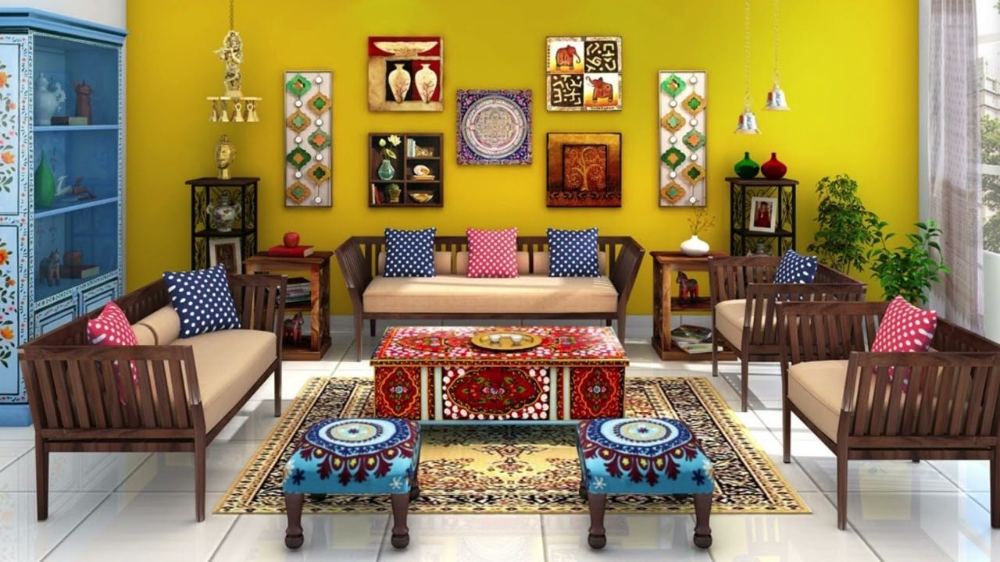
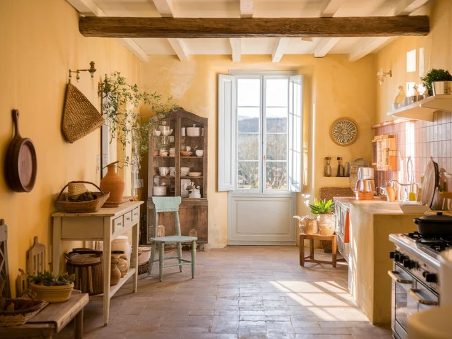
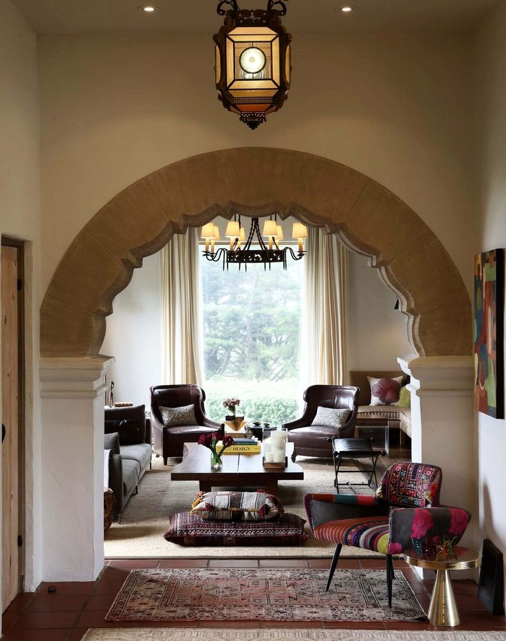

Этнические стили

Основная цветовая гамма
Лавандовый, терракотовый, оливковый, песочный, пряные оттенки
Краткое описание
Эта категория объединяет интерьеры, вдохновленные культурой и природой разных уголков мира. Каждый из них имеет свой неповторимый колорит и настроение — от нежного Прованса до пряного Колониального стиля.
Разновидности этнических стилей
| № | Разновидность стиля | Фото дизайна | Краткое описание |
|---|---|---|---|
| 1 | Прованс |  |
Французская деревня: нежность, пастельные тона, выбеленное дерево, цветочные узоры, кружево. Светлый, романтичный и немного "потертый". |
| 2 | Колониальный стиль |  |
Английская классика, экзотика колоний. Плетеная мебель из ротанга, кожаные диваны, карты, гравюры. Теплая, землистая, пряная гамма. |